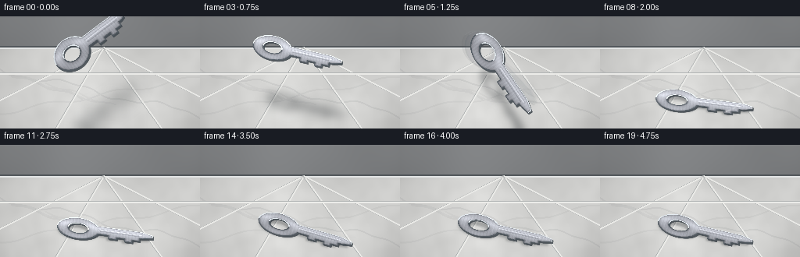
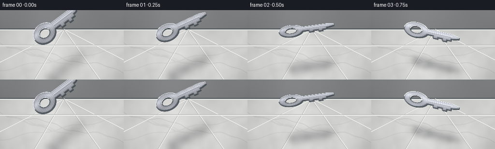

CODING AGENTS AS PIXEL WORLD MODELS
traex/GPT-5.6-Sol · material_0014
点击播放 · 原生 RGB 像素
逐轮保存的候选
回放视频、检查图与代码变化。
每份候选均可单独播放。实际图片检查记录在下方工具轨迹中。
候选 01播放与检查图
点击播放 · 原生 RGB 像素


展开代码变化
--- 上一保存版本
+++ 本次保存版本
@@ -0,0 +1,296 @@
+from pathlib import Path
+import math
+import numpy as np
+import cv2
+from PIL import Image, ImageDraw, ImageFont
+import artifact_io
+
+# Deterministic, fully procedural text-to-video renderer.
+W, H, N, FPS = 256, 144, 20, 4.0
+SS = 3
+WW, HH = W * SS, H * SS
+rng = np.random.default_rng(1407)
+
+
+def smooth_noise(h, w, sigma, seed):
+ r = np.random.default_rng(seed).normal(0, 1, (h, w)).astype(np.float32)
+ return cv2.GaussianBlur(r, (0, 0), sigmaX=sigma, sigmaY=sigma)
+
+
+def make_background():
+ """Cool gray wall and a large, glossy white-gray marble floor."""
+ yy, xx = np.mgrid[0:HH, 0:WW].astype(np.float32)
+ y = yy / SS
+ x = xx / SS
+ horizon = 39 * SS
+
+ # Quiet stone wall, slightly darker than the floor.
+ wall_n = smooth_noise(HH, WW, 24 * SS, 42)
+ wall_n /= max(float(wall_n.std()), 1e-5)
+ wall = np.zeros((HH, WW, 3), np.float32)
+ wall_base = 126 + 10 * (1 - yy / max(horizon, 1)) + wall_n * 2.0
+ wall[..., 0] = wall_base + 3
+ wall[..., 1] = wall_base + 5
+ wall[..., 2] = wall_base + 7
+
+ # Marble: low-frequency cloudy mineral variation plus fine grain.
+ n1 = smooth_noise(HH, WW, 20 * SS, 4)
+ n2 = smooth_noise(HH, WW, 5 * SS, 19)
+ n1 /= max(float(n1.std()), 1e-5)
+ n2 /= max(float(n2.std()), 1e-5)
+ depth = np.clip((y - 39) / 105, 0, 1)
+ marble = 205 + 12 * depth + 5.3 * n1 + 1.7 * n2
+ floor = np.zeros_like(wall)
+ floor[..., 0] = marble + 3
+ floor[..., 1] = marble + 3
+ floor[..., 2] = marble + 1
+
+ bg = np.where((yy >= horizon)[..., None], floor, wall)
+
+ # Subtle lens vignette focuses attention on the key.
+ vignette = 1.0 - 0.10 * (((x - 128) / 150) ** 2 + ((y - 79) / 100) ** 2)
+ bg *= np.clip(vignette[..., None], .82, 1.0)
+ bg = np.clip(bg, 0, 255).astype(np.uint8)
+
+ # Marble veins on an overlay: sinuous, mostly diagonal and irregular.
+ overlay = np.zeros((HH, WW, 4), np.uint8)
+ od = ImageDraw.Draw(Image.fromarray(overlay), 'RGBA')
+ # Drawing through cv2 gives high quality lines at supersampled resolution.
+ vein = np.zeros((HH, WW, 4), np.uint8)
+ def curve(points, color, width):
+ pts = np.round(np.asarray(points) * SS).astype(np.int32).reshape(-1, 1, 2)
+ cv2.polylines(vein, [pts], False, color, width * SS, cv2.LINE_AA)
+ # Main characteristic marble vein, safely below the floor boundary.
+ pts = []
+ for X in np.linspace(-18, 275, 120):
+ Y = 68 + .23 * X + 4.2 * math.sin(X / 19) + 1.5 * math.sin(X / 6.7)
+ pts.append((X, Y))
+ curve(pts, (112, 116, 119, 28), 1)
+ pts2 = []
+ for X in np.linspace(-5, 268, 110):
+ Y = 124 - .18 * X + 3.0 * math.sin(X / 14 + .5)
+ pts2.append((X, Y))
+ curve(pts2, (124, 127, 130, 21), 1)
+ # Fine branch veins.
+ for off, alpha in [(0, 18), (19, 15), (43, 13)]:
+ points=[]
+ for X in np.linspace(15+off, 105+off, 40):
+ Y=72+.23*X + (X-(15+off))*.10 + 2*math.sin(X/8+off)
+ points.append((X,Y))
+ curve(points, (102, 107, 111, alpha), 1)
+
+ # Composite translucent veins.
+ a = vein[..., 3:4].astype(np.float32) / 255
+ bg = (bg.astype(np.float32) * (1-a) + vein[..., :3].astype(np.float32) * a).astype(np.uint8)
+
+ # Architectural seams / slab joints in perspective.
+ # Floor/wall join with soft ambient occlusion.
+ cv2.line(bg, (0, 39*SS), (WW, 39*SS), (82, 87, 91), 2*SS, cv2.LINE_AA)
+ cv2.line(bg, (0, 41*SS), (WW, 41*SS), (226, 228, 228), SS, cv2.LINE_AA)
+ van = (132*SS, 40*SS)
+ for bx in (-72, 71, 206, 335):
+ cv2.line(bg, van, (bx*SS, HH), (173, 176, 176), SS, cv2.LINE_AA)
+ cv2.line(bg, (van[0]+SS, van[1]), ((bx+1)*SS, HH), (234, 234, 231), SS, cv2.LINE_AA)
+ # One distant cross-joint.
+ cv2.line(bg, (0, 73*SS), (WW, 73*SS), (176, 179, 179), SS, cv2.LINE_AA)
+ cv2.line(bg, (0, 74*SS), (WW, 74*SS), (235, 235, 232), SS, cv2.LINE_AA)
+
+ # Soft reflected light stripe on polished floor.
+ highlight = np.exp(-((x - 142) / 63) ** 2) * np.clip((y-40)/80, 0, 1) * 5
+ bg = np.clip(bg.astype(np.float32) + highlight[..., None], 0, 255).astype(np.uint8)
+ return bg
+
+
+def canonical_key():
+ """Return a detailed RGBA master and alpha mask for a sturdy house key."""
+ kw, kh = 136 * SS, 68 * SS
+ mask = np.zeros((kh, kw), np.uint8)
+ # Heavy circular bow.
+ cv2.circle(mask, (31*SS, 34*SS), 27*SS, 255, -1, cv2.LINE_AA)
+ # Neck and shaft with chamfered nose and stout teeth.
+ body = np.array([
+ [43,22], [112,22], [126,27], [126,35], [114,39],
+ [110,39], [110,46], [101,46], [101,52], [91,52], [91,45],
+ [81,45], [81,50], [70,50], [70,42], [45,42]
+ ], np.int32) * SS
+ cv2.fillPoly(mask, [body], 255, cv2.LINE_AA)
+ # Strong connector between bow and blade.
+ cv2.rectangle(mask, (31*SS, 22*SS), (57*SS, 42*SS), 255, -1)
+ # Ring opening.
+ cv2.circle(mask, (31*SS, 34*SS), 12*SS, 0, -1, cv2.LINE_AA)
+
+ # Distance to every edge, including the inner hole, naturally forms a bevel.
+ dist = cv2.distanceTransform(mask, cv2.DIST_L2, 5) / SS
+ inside = mask.astype(np.float32) / 255.0
+ yy, xx = np.mgrid[0:kh, 0:kw].astype(np.float32)
+ local_y = yy / SS
+ local_x = xx / SS
+ bevel = np.clip(dist / 3.8, 0, 1)
+ # Brushed-steel face: directional gradient, narrow reflection bands and grain.
+ brush = 4.0*np.sin(local_x*1.55) + 2.2*np.sin(local_x*4.3 + .8)
+ broad = 28*np.exp(-((local_y-25)/7.0)**2) - 17*np.exp(-((local_y-48)/8.5)**2)
+ lum = 157 + broad + brush
+ lum = lum * (0.61 + 0.39*bevel) + 15*np.clip((dist-2.0)/7, 0, 1)
+ # Tiny deterministic grain lends metal rather than flat-vector appearance.
+ grain = rng.normal(0, 2.2, (kh, kw)).astype(np.float32)
+ lum += grain
+ rgba = np.zeros((kh, kw, 4), np.uint8)
+ rgba[..., 0] = np.clip(lum*1.02+3, 0, 255)
+ rgba[..., 1] = np.clip(lum*1.03+4, 0, 255)
+ rgba[..., 2] = np.clip(lum*1.06+7, 0, 255)
+ rgba[..., 3] = mask
+
+ # Beveled top rim and dark lower rim add convincing thickness.
+ er = cv2.erode(mask, np.ones((2*SS+1, 2*SS+1), np.uint8))
+ rim = cv2.subtract(mask, er)
+ upper = rim.copy()
+ upper[(local_y > 36)] = 0
+ lower = rim.copy()
+ lower[(local_y < 34)] = 0
+ rgba[upper > 0, :3] = np.array([223, 230, 235], np.uint8)
+ rgba[lower > 0, :3] = np.array([83, 91, 98], np.uint8)
+
+ # Two recessed blade grooves, clipped to the metal.
+ groove = np.zeros_like(mask)
+ cv2.line(groove, (57*SS, 29*SS), (113*SS, 29*SS), 210, SS, cv2.LINE_AA)
+ cv2.line(groove, (58*SS, 34*SS), (108*SS, 34*SS), 110, SS, cv2.LINE_AA)
+ gsel = (groove > 0) & (mask > 0)
+ rgba[gsel, :3] = np.clip(rgba[gsel, :3].astype(np.int16) - 24, 0, 255)
+ # Fine highlight just beneath first groove.
+ hi = np.zeros_like(mask)
+ cv2.line(hi, (58*SS, 30*SS), (112*SS, 30*SS), 255, SS, cv2.LINE_AA)
+ hsel = (hi > 0) & (mask > 0)
+ rgba[hsel, :3] = np.clip(rgba[hsel, :3].astype(np.int16) + 30, 0, 255)
+ return rgba, mask
+
+
+BG = make_background()
+KEY_RGBA, KEY_MASK = canonical_key()
+KC = np.array([68*SS, 34*SS], np.float32)
+
+
+def affine_for(cx, cy, angle, yscale, scale=1.0):
+ th = math.radians(angle)
+ # Anisotropic local foreshortening followed by in-plane rotation.
+ A = np.array([[math.cos(th)*scale, -math.sin(th)*scale*yscale],
+ [math.sin(th)*scale, math.cos(th)*scale*yscale]], np.float32)
+ target = np.array([cx*SS, cy*SS], np.float32)
+ b = target - A @ KC
+ return np.column_stack([A, b]).astype(np.float32)
+
+
+def alpha_over(dst, src_rgba, opacity=1.0):
+ a = src_rgba[..., 3:4].astype(np.float32) / 255.0 * opacity
+ return np.clip(dst.astype(np.float32)*(1-a) + src_rgba[..., :3].astype(np.float32)*a, 0, 255).astype(np.uint8)
+
+
+def render_shadow(frame, angle, progress, height, cx=135, ground_y=114):
+ # A falling object casts a diffuse, slightly offset shadow; at contact it sharpens.
+ sh_scale = 0.78 + 0.18*progress
+ M = affine_for(cx + 4.5*(1-progress), ground_y + 2.2, angle, 0.40, sh_scale)
+ sh = cv2.warpAffine(KEY_MASK, M, (WW, HH), flags=cv2.INTER_LINEAR,
+ borderMode=cv2.BORDER_CONSTANT, borderValue=0)
+ sigma = (1.3 + 8.0*height) * SS
+ sh = cv2.GaussianBlur(sh, (0,0), sigmaX=sigma, sigmaY=sigma)
+ # Keep enough density even after broad blur.
+ if sh.max() > 0:
+ sh = sh.astype(np.float32) / sh.max()
+ alpha = sh[..., None] * (0.34 - .08*height)
+ dark = np.zeros_like(frame) + np.array([38,42,45], np.uint8)
+ return np.clip(frame.astype(np.float32)*(1-alpha) + dark.astype(np.float32)*alpha, 0,255).astype(np.uint8)
+
+
+def render_key(frame, cx, cy, angle, yscale, scale, gleam=0.0, opacity=1.0):
+ M = affine_for(cx, cy, angle, yscale, scale)
+ # Visible dark sidewall offset down-right: the key has real steel thickness.
+ side_mask = cv2.warpAffine(KEY_MASK, M, (WW, HH), flags=cv2.INTER_LINEAR,
+ borderMode=cv2.BORDER_CONSTANT, borderValue=0)
+ side_rgba = np.zeros((HH,WW,4), np.uint8)
+ # Layered offset approximates a 2.5D extrusion.
+ combined = np.zeros((HH,WW), np.uint8)
+ for d in (3.0, 2.0, 1.0):
+ shifted = cv2.warpAffine(side_mask, np.float32([[1,0,d*SS*.45],[0,1,d*SS*.65]]),
+ (WW,HH), flags=cv2.INTER_LINEAR)
+ combined = np.maximum(combined, shifted)
+ side_rgba[..., :3] = np.array([68,75,81], np.uint8)
+ side_rgba[..., 3] = combined
+ frame = alpha_over(frame, side_rgba, .90*opacity)
+
+ face = cv2.warpAffine(KEY_RGBA, M, (WW, HH), flags=cv2.INTER_CUBIC,
+ borderMode=cv2.BORDER_CONSTANT, borderValue=(0,0,0,0))
+ # Light orientation changes brightness as the key tumbles.
+ orient_light = 0.91 + .12*math.cos(math.radians(angle-10)) + gleam
+ face[..., :3] = np.clip(face[..., :3].astype(np.float32)*orient_light, 0,255).astype(np.uint8)
+ frame = alpha_over(frame, face, opacity)
+ return frame, face[...,3]
+
+
+# Hand-tuned rigid-body trajectory. Impact is frame 8 (2.0 s), then damped bounces.
+CX = [119,121,124,127,130,132,134,135,136,137,137,137,137,137,137,137,137,137,137,137]
+CY = [27,31,38,48,61,76,92,106,112,102,107,112,107.5,110.5,112,110.7,111.4,111.8,112,112]
+ANG = [-37,-25,-8,13,35,56,43,24,7,-5,1,8,14,17,16,14,13,13,13,13]
+YS = [.82,.68,.47,.60,.86,.70,.43,.50,.50,.66,.58,.49,.56,.52,.50,.52,.51,.505,.505,.505]
+SC = [.92,.93,.94,.95,.97,.99,1.00,1.01,1.02,1.01,1.01,1.01,1.01,1.01,1.01,1.01,1.01,1.01,1.01,1.01]
+
+
+def make_frame(i):
+ frame = BG.copy()
+ before_impact = i <= 8
+ if before_impact:
+ progress = i / 8.0
+ height = max(0.0, 1.0-progress)
+ else:
+ # Bounce height measured from final resting center.
+ progress = 1.0
+ height = max(0.0, (112-CY[i])/15.0)
+ frame = render_shadow(frame, ANG[i], progress, height)
+
+ # Faint, short motion streak on the two fastest pre-impact frames.
+ if i in (5,6,7):
+ prev = max(0, i-1)
+ for mix, frac in [(.08,.58),(.045,.30)]:
+ tx = CX[prev] + (CX[i]-CX[prev])*frac
+ ty = CY[prev] + (CY[i]-CY[prev])*frac
+ ta = ANG[prev] + (ANG[i]-ANG[prev])*frac
+ frame, _ = render_key(frame, tx, ty, ta, (YS[prev]+YS[i])*.5, SC[i], opacity=mix)
+
+ gleam = .08 if i in (3,8,11) else 0
+ frame, key_alpha = render_key(frame, CX[i], CY[i], ANG[i], YS[i], SC[i], gleam=gleam)
+
+ # On a polished floor, the resting key has a restrained, broken reflection.
+ if i >= 8:
+ refl = cv2.flip(key_alpha, 0)
+ # Rather than geometric full-frame flip, make a subtle contact sheen directly below.
+ sheen = cv2.GaussianBlur(key_alpha, (0,0), 2.2*SS)
+ sheen = cv2.warpAffine(sheen, np.float32([[1,0,0],[0,.22, (116*SS)*(1-.22)]]),
+ (WW,HH), flags=cv2.INTER_LINEAR)
+ sheen = sheen[...,None].astype(np.float32)/255 * .055
+ cool = np.zeros_like(frame)+np.array([174,183,190],np.uint8)
+ frame = np.clip(frame.astype(np.float32)*(1-sheen)+cool.astype(np.float32)*sheen,0,255).astype(np.uint8)
+
+ # Impact glints and microscopic marble dust only at the first hard strike.
+ if i == 8:
+ ov = frame.copy()
+ p = (169*SS, 120*SS)
+ cv2.line(ov, (p[0]-8*SS,p[1]+2*SS), (p[0]-2*SS,p[1]), (244,246,245), SS, cv2.LINE_AA)
+ cv2.line(ov, (p[0]+2*SS,p[1]-2*SS), (p[0]+7*SS,p[1]-6*SS), (244,246,245), SS, cv2.LINE_AA)
+ cv2.circle(ov, (177*SS,114*SS), SS, (250,251,249), -1, cv2.LINE_AA)
+ frame = cv2.addWeighted(frame,.68,ov,.32,0)
+ elif i == 9:
+ cv2.circle(frame, (177*SS,116*SS), SS, (227,229,226), -1, cv2.LINE_AA)
+
+ # Very subtle horizontal vibration blur at impact communicates the hard floor.
+ if i == 8:
+ blurred = cv2.GaussianBlur(frame, (5*SS|1,1), 0)
+ frame = cv2.addWeighted(frame,.78,blurred,.22,0)
+
+ # Downsample with Lanczos antialiasing.
+ frame = cv2.resize(frame, (W,H), interpolation=cv2.INTER_LANCZOS4)
+ return cv2.cvtColor(frame, cv2.COLOR_BGR2RGB) if False else frame
+
+
+frames = np.stack([make_frame(i) for i in range(N)]).astype(np.uint8)
+# OpenCV arrays here were authored consistently as RGB value triplets; no channel swap needed.
+case_dir = Path(__file__).resolve().parent
+artifact_io.save(frames, case_dir)
+print(f"saved {frames.shape[0]} RGB frames at {frames.shape[2]}x{frames.shape[1]}")
可观测工具轨迹
实际执行的命令与返回图片。
命令 1exit 0
/bin/bash -lc "cat prompt.txt && printf '\\n--- GENERATION_RULES.md ---\\n' && cat GENERATION_RULES.md && printf '\\n--- task_spec.json ---\\n' && cat task_spec.json"
命令 2exit 0
/bin/bash -lc "find . -maxdepth 3 -type f -printf '%p\\n' | sort && printf '\\n--- tools ---\\n' && command -v ffmpeg || true && command -v python3 || true && python3 - <<'PY' mods=['PIL','numpy','cv2','imageio','moviepy','cairo'] for m in mods: try: x=__import__(m); print(m,'OK',getattr(x,'__version__','')) except Exception as e: print(m,'NO',type(e).__name__) PY"
命令 3exit 0
/bin/bash -lc 'cat artifact_io.py'
命令 4exit 0
/bin/bash -lc "cat > generate.py <<'PY'
from pathlib import Path
import math
import numpy as np
import cv2
from PIL import Image, ImageDraw, ImageFont
import artifact_io
# Deterministic, fully procedural text-to-video renderer.
W, H, N, FPS = 256, 144, 20, 4.0
SS = 3
WW, HH = W * SS, H * SS
rng = np.random.default_rng(1407)
def smooth_noise(h, w, sigma, seed):
r = np.random.default_rng(seed).normal(0, 1, (h, w)).astype(np.float32)
return cv2.GaussianBlur(r, (0, 0), sigmaX=sigma, sigmaY=sigma)
def make_background():
\"\"\"Cool gray wall and a large, glossy white-gray marble floor.\"\"\"
yy, xx = np.mgrid[0:HH, 0:WW].astype(np.float32)
y = yy / SS
x = xx / SS
horizon = 39 * SS
# Quiet stone wall, slightly darker than the floor.
wall_n = smooth_noise(HH, WW, 24 * SS, 42)
wall_n /= max(float(wall_n.std()), 1e-5)
wall = np.zeros((HH, WW, 3), np.float32)
wall_base = 126 + 10 * (1 - yy / max(horizon, 1)) + wall_n * 2.0
wall[..., 0] = wall_base + 3
wall[..., 1] = wall_base + 5
wall[..., 2] = wall_base + 7
# Marble: low-frequency cloudy mineral variation plus fine grain.
n1 = smooth_noise(HH, WW, 20 * SS, 4)
n2 = smooth_noise(HH, WW, 5 * SS, 19)
n1 /= max(float(n1.std()), 1e-5)
n2 /= max(float(n2.std()), 1e-5)
depth = np.clip((y - 39) / 105, 0, 1)
marble = 205 + 12 * depth + 5.3 * n1 + 1.7 * n2
floor = np.zeros_like(wall)
floor[..., 0] = marble + 3
floor[..., 1] = marble + 3
floor[..., 2] = marble + 1
bg = np.where((yy >= horizon)[..., None], floor, wall)
# Subtle lens vignette focuses attention on the key.
vignette = 1.0 - 0.10 * (((x - 128) / 150) ** 2 + ((y - 79) / 100) ** 2)
bg *= np.clip(vignette[..., None], .82, 1.0)
bg = np.clip(bg, 0, 255).astype(np.uint8)
# Marble veins on an overlay: sinuous, mostly diagonal and irregular.
overlay = np.zeros((HH, WW, 4), np.uint8)
od = ImageDraw.Draw(Image.fromarray(overlay), 'RGBA')
# Drawing through cv2 gives high quality lines at supersampled resolution.
vein = np.zeros((HH, WW, 4), np.uint8)
def curve(points, color, width):
pts = np.round(np.asarray(points) * SS).astype(np.int32).reshape(-1, 1, 2)
cv2.polylines(vein, [pts], False, color, width * SS, cv2.LINE_AA)
# Main characteristic marble vein, safely below the floor boundary.
pts = []
for X in np.linspace(-18, 275, 120):
Y = 68 + .23 * X + 4.2 * math.sin(X / 19) + 1.5 * math.sin(X / 6.7)
pts.append((X, Y))
curve(pts, (112, 116, 119, 28), 1)
pts2 = []
for X in np.linspace(-5, 268, 110):
Y = 124 - .18 * X + 3.0 * math.sin(X / 14 + .5)
pts2.append((X, Y))
curve(pts2, (124, 127, 130, 21), 1)
# Fine branch veins.
for off, alpha in [(0, 18), (19, 15), (43, 13)]:
points=[]
for X in np.linspace(15+off, 105+off, 40):
Y=72+.23*X + (X-(15+off))*.10 + 2*math.sin(X/8+off)
points.append((X,Y))
curve(points, (102, 107, 111, alpha), 1)
# Composite translucent veins.
a = vein[..., 3:4].astype(np.float32) / 255
bg = (bg.astype(np.float32) * (1-a) + vein[..., :3].astype(np.float32) * a).astype(np.uint8)
# Architectural seams / slab joints in perspective.
# Floor/wall join with soft ambient occlusion.
cv2.line(bg, (0, 39*SS), (WW, 39*SS), (82, 87, 91), 2*SS, cv2.LINE_AA)
cv2.line(bg, (0, 41*SS), (WW, 41*SS), (226, 228, 228), SS, cv2.LINE_AA)
van = (132*SS, 40*SS)
for bx in (-72, 71, 206, 335):
cv2.line(bg, van, (bx*SS, HH), (173, 176, 176), SS, cv2.LINE_AA)
cv2.line(bg, (van[0]+SS, van[1]), ((bx+1)*SS, HH), (234, 234, 231), SS, cv2.LINE_AA)
# One distant cross-joint.
cv2.line(bg, (0, 73*SS), (WW, 73*SS), (176, 179, 179), SS, cv2.LINE_AA)
cv2.line(bg, (0, 74*SS), (WW, 74*SS), (235, 235, 232), SS, cv2.LINE_AA)
# Soft reflected light stripe on polished floor.
highlight = np.exp(-((x - 142) / 63) ** 2) * np.clip((y-40)/80, 0, 1) * 5
bg = np.clip(bg.astype(np.float32) + highlight[..., None], 0, 255).astype(np.uint8)
return bg
def canonical_key():
\"\"\"Return a detailed RGBA master and alpha mask for a sturdy house key.\"\"\"
kw, kh = 136 * SS, 68 * SS
mask = np.zeros((kh, kw), np.uint8)
# Heavy circular bow.
cv2.circle(mask, (31*SS, 34*SS), 27*SS, 255, -1, cv2.LINE_AA)
# Neck and shaft with chamfered nose and stout teeth.
body = np.array([
[43,22], [112,22], [126,27], [126,35], [114,39],
[110,39], [110,46], [101,46], [101,52], [91,52], [91,45],
[81,45], [81,50], [70,50], [70,42], [45,42]
], np.int32) * SS
cv2.fillPoly(mask, [body], 255, cv2.LINE_AA)
# Strong connector between bow and blade.
cv2.rectangle(mask, (31*SS, 22*SS), (57*SS, 42*SS), 255, -1)
# Ring opening.
cv2.circle(mask, (31*SS, 34*SS), 12*SS, 0, -1, cv2.LINE_AA)
# Distance to every edge, including the inner hole, naturally forms a bevel.
dist = cv2.distanceTransform(mask, cv2.DIST_L2, 5) / SS
inside = mask.astype(np.float32) / 255.0
yy, xx = np.mgrid[0:kh, 0:kw].astype(np.float32)
local_y = yy / SS
local_x = xx / SS
bevel = np.clip(dist / 3.8, 0, 1)
# Brushed-steel face: directional gradient, narrow reflection bands and grain.
brush = 4.0*np.sin(local_x*1.55) + 2.2*np.sin(local_x*4.3 + .8)
broad = 28*np.exp(-((local_y-25)/7.0)**2) - 17*np.exp(-((local_y-48)/8.5)**2)
lum = 157 + broad + brush
lum = lum * (0.61 + 0.39*bevel) + 15*np.clip((dist-2.0)/7, 0, 1)
# Tiny deterministic grain lends metal rather than flat-vector appearance.
grain = rng.normal(0, 2.2, (kh, kw)).astype(np.float32)
lum += grain
rgba = np.zeros((kh, kw, 4), np.uint8)
rgba[..., 0] = np.clip(lum*1.02+3, 0, 255)
rgba[..., 1] = np.clip(lum*1.03+4, 0, 255)
rgba[..., 2] = np.clip(lum*1.06+7, 0, 255)
rgba[..., 3] = mask
# Beveled top rim and dark lower rim add convincing thickness.
er = cv2.erode(mask, np.ones((2*SS+1, 2*SS+1), np.uint8))
rim = cv2.subtract(mask, er)
upper = rim.copy()
upper[(local_y > 36)] = 0
lower = rim.copy()
lower[(local_y < 34)] = 0
rgba[upper > 0, :3] = np.array([223, 230, 235], np.uint8)
rgba[lower > 0, :3] = np.array([83, 91, 98], np.uint8)
# Two recessed blade grooves, clipped to the metal.
groove = np.zeros_like(mask)
cv2.line(groove, (57*SS, 29*SS), (113*SS, 29*SS), 210, SS, cv2.LINE_AA)
cv2.line(groove, (58*SS, 34*SS), (108*SS, 34*SS), 110, SS, cv2.LINE_AA)
gsel = (groove > 0) & (mask > 0)
rgba[gsel, :3] = np.clip(rgba[gsel, :3].astype(np.int16) - 24, 0, 255)
# Fine highlight just beneath first groove.
hi = np.zeros_like(mask)
cv2.line(hi, (58*SS, 30*SS), (112*SS, 30*SS), 255, SS, cv2.LINE_AA)
hsel = (hi > 0) & (mask > 0)
rgba[hsel, :3] = np.clip(rgba[hsel, :3].astype(np.int16) + 30, 0, 255)
return rgba, mask
BG = make_background()
KEY_RGBA, KEY_MASK = canonical_key()
KC = np.array([68*SS, 34*SS], np.float32)
def affine_for(cx, cy, angle, yscale, scale=1.0):
th = math.radians(angle)
# Anisotropic local foreshortening followed by in-plane rotation.
A = np.array([[math.cos(th)*scale, -math.sin(th)*scale*yscale],
[math.sin(th)*scale, math.cos(th)*scale*yscale]], np.float32)
target = np.array([cx*SS, cy*SS], np.float32)
b = target - A @ KC
return np.column_stack([A, b]).astype(np.float32)
def alpha_over(dst, src_rgba, opacity=1.0):
a = src_rgba[..., 3:4].astype(np.float32) / 255.0 * opacity
return np.clip(dst.astype(np.float32)*(1-a) + src_rgba[..., :3].astype(np.float32)*a, 0, 255).astype(np.uint8)
def render_shadow(frame, angle, progress, height, cx=135, ground_y=114):
# A falling object casts a diffuse, slightly offset shadow; at contact it sharpens.
sh_scale = 0.78 + 0.18*progress
M = affine_for(cx + 4.5*(1-progress), ground_y + 2.2, angle, 0.40, sh_scale)
sh = cv2.warpAffine(KEY_MASK, M, (WW, HH), flags=cv2.INTER_LINEAR,
borderMode=cv2.BORDER_CONSTANT, borderValue=0)
sigma = (1.3 + 8.0*height) * SS
sh = cv2.GaussianBlur(sh, (0,0), sigmaX=sigma, sigmaY=sigma)
# Keep enough density even after broad blur.
if sh.max() > 0:
sh = sh.astype(np.float32) / sh.max()
alpha = sh[..., None] * (0.34 - .08*height)
dark = np.zeros_like(frame) + np.array([38,42,45], np.uint8)
return np.clip(frame.astype(np.float32)*(1-alpha) + dark.astype(np.float32)*alpha, 0,255).astype(np.uint8)
def render_key(frame, cx, cy, angle, yscale, scale, gleam=0.0, opacity=1.0):
M = affine_for(cx, cy, angle, yscale, scale)
# Visible dark sidewall offset down-right: the key has real steel thickness.
side_mask = cv2.warpAffine(KEY_MASK, M, (WW, HH), flags=cv2.INTER_LINEAR,
borderMode=cv2.BORDER_CONSTANT, borderValue=0)
side_rgba = np.zeros((HH,WW,4), np.uint8)
# Layered offset approximates a 2.5D extrusion.
combined = np.zeros((HH,WW), np.uint8)
for d in (3.0, 2.0, 1.0):
shifted = cv2.warpAffine(side_mask, np.float32([[1,0,d*SS*.45],[0,1,d*SS*.65]]),
(WW,HH), flags=cv2.INTER_LINEAR)
combined = np.maximum(combined, shifted)
side_rgba[..., :3] = np.array([68,75,81], np.uint8)
side_rgba[..., 3] = combined
frame = alpha_over(frame, side_rgba, .90*opacity)
face = cv2.warpAffine(KEY_RGBA, M, (WW, HH), flags=cv2.INTER_CUBIC,
borderMode=cv2.BORDER_CONSTANT, borderValue=(0,0,0,0))
# Light orientation changes brightness as the key tumbles.
orient_light = 0.91 + .12*math.cos(math.radians(angle-10)) + gleam
face[..., :3] = np.clip(face[..., :3].astype(np.float32)*orient_light, 0,255).astype(np.uint8)
frame = alpha_over(frame, face, opacity)
return frame, face[...,3]
# Hand-tuned rigid-body trajectory. Impact is frame 8 (2.0 s), then damped bounces.
CX = [119,121,124,127,130,132,134,135,136,137,137,137,137,137,137,137,137,137,137,137]
CY = [27,31,38,48,61,76,92,106,112,102,107,112,107.5,110.5,112,110.7,111.4,111.8,112,112]
ANG = [-37,-25,-8,13,35,56,43,24,7,-5,1,8,14,17,16,14,13,13,13,13]
YS = [.82,.68,.47,.60,.86,.70,.43,.50,.50,.66,.58,.49,.56,.52,.50,.52,.51,.505,.505,.505]
SC = [.92,.93,.94,.95,.97,.99,1.00,1.01,1.02,1.01,1.01,1.01,1.01,1.01,1.01,1.01,1.01,1.01,1.01,1.01]
def make_frame(i):
frame = BG.copy()
before_impact = i <= 8
if before_impact:
progress = i / 8.0
height = max(0.0, 1.0-progress)
else:
# Bounce height measured from final resting center.
progress = 1.0
height = max(0.0, (112-CY[i])/15.0)
frame = render_shadow(frame, ANG[i], progress, height)
# Faint, short motion streak on the two fastest pre-impact frames.
if i in (5,6,7):
prev = max(0, i-1)
for mix, frac in [(.08,.58),(.045,.30)]:
tx = CX[prev] + (CX[i]-CX[prev])*frac
ty = CY[prev] + (CY[i]-CY[prev])*frac
ta = ANG[prev] + (ANG[i]-ANG[prev])*frac
frame, _ = render_key(frame, tx, ty, ta, (YS[prev]+YS[i])*.5, SC[i], opacity=mix)
gleam = .08 if i in (3,8,11) else 0
frame, key_alpha = render_key(frame, CX[i], CY[i], ANG[i], YS[i], SC[i], gleam=gleam)
# On a polished floor, the resting key has a restrained, broken reflection.
if i >= 8:
refl = cv2.flip(key_alpha, 0)
# Rather than geometric full-frame flip, make a subtle contact sheen directly below.
sheen = cv2.GaussianBlur(key_alpha, (0,0), 2.2*SS)
sheen = cv2.warpAffine(sheen, np.float32([[1,0,0],[0,.22, (116*SS)*(1-.22)]]),
(WW,HH), flags=cv2.INTER_LINEAR)
sheen = sheen[...,None].astype(np.float32)/255 * .055
cool = np.zeros_like(frame)+np.array([174,183,190],np.uint8)
frame = np.clip(frame.astype(np.float32)*(1-sheen)+cool.astype(np.float32)*sheen,0,255).astype(np.uint8)
# Impact glints and microscopic marble dust only at the first hard strike.
if i == 8:
ov = frame.copy()
p = (169*SS, 120*SS)
cv2.line(ov, (p[0]-8*SS,p[1]+2*SS), (p[0]-2*SS,p[1]), (244,246,245), SS, cv2.LINE_AA)
cv2.line(ov, (p[0]+2*SS,p[1]-2*SS), (p[0]+7*SS,p[1]-6*SS), (244,246,245), SS, cv2.LINE_AA)
cv2.circle(ov, (177*SS,114*SS), SS, (250,251,249), -1, cv2.LINE_AA)
frame = cv2.addWeighted(frame,.68,ov,.32,0)
elif i == 9:
cv2.circle(frame, (177*SS,116*SS), SS, (227,229,226), -1, cv2.LINE_AA)
# Very subtle horizontal vibration blur at impact communicates the hard floor.
if i == 8:
blurred = cv2.GaussianBlur(frame, (5*SS|1,1), 0)
frame = cv2.addWeighted(frame,.78,blurred,.22,0)
# Downsample with Lanczos antialiasing.
frame = cv2.resize(frame, (W,H), interpolation=cv2.INTER_LANCZOS4)
return cv2.cvtColor(frame, cv2.COLOR_BGR2RGB) if False else frame
frames = np.stack([make_frame(i) for i in range(N)]).astype(np.uint8)
# OpenCV arrays here were authored consistently as RGB value triplets; no channel swap needed.
case_dir = Path(__file__).resolve().parent
artifact_io.save(frames, case_dir)
print(f\"saved {frames.shape[0]} RGB frames at {frames.shape[2]}x{frames.shape[1]}\")
PY
python3 generate.py
python3 - <<'PY'
from pathlib import Path
import numpy as np
from PIL import Image
p=Path('.')
z=np.load(p/'pixels.npz')['pixels']
print('pixels', z.shape,z.dtype,'range',int(z.min()),int(z.max()))
print('frames',len(list((p/'frames').glob('*.png'))),'inspection',Image.open('inspection.png').size)
PY"命令 5exit 0
/bin/bash -lc "python3 - <<'PY'
from PIL import Image
import numpy as np
chars=' .:-=+*#%@'
for fi in [0,3,5,7,8,9,11,13,16,19]:
a=np.asarray(Image.open(f'frames/{fi:02d}.png').convert('L'))
# edge representation, useful for checking key silhouette without visual tools
import cv2
e=cv2.Canny(a,45,100)
e=cv2.resize(e,(64,36),interpolation=cv2.INTER_AREA)
print('\\nFRAME',fi)
for row in e:
print(''.join(chars[min(9,int(v)//26)] for v in row))
PY"命令 6exit 0
/bin/bash -lc "python3 - <<'PY'
from PIL import Image
import numpy as np, os
ims=[np.asarray(Image.open(f'frames/{i:02d}.png')) for i in range(20)]
for i,a in enumerate(ims):
d=0 if i==0 else np.abs(a.astype(int)-ims[i-1].astype(int)).mean()
# contrast in broad key action area versus floor background
print(f'{i:02d}: mean={a.mean():6.2f} std={a.std():5.2f} delta={d:5.2f} clipped={(a>=254).mean():.3f}')
print('required:',[(f,os.path.getsize(f)) for f in ['pixels.npz','index.html','inspection.png','transition_check.png','generate.py']])
PY"保存候选 1 份；完成命令 6 次；可验证图片返回 0 张。原始 API 响应与完整日志保留在本地。